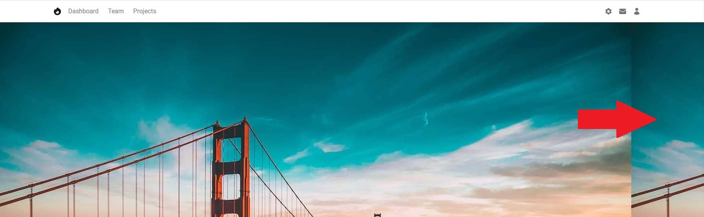
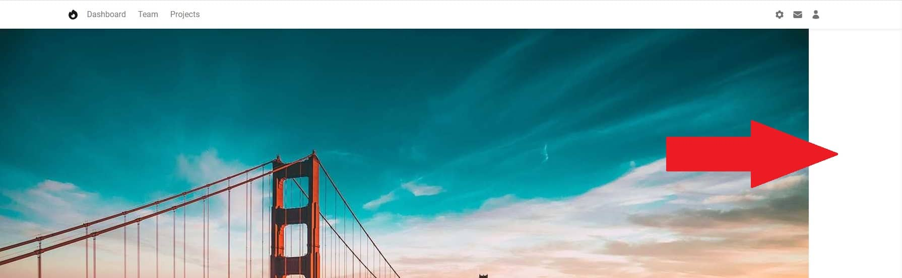
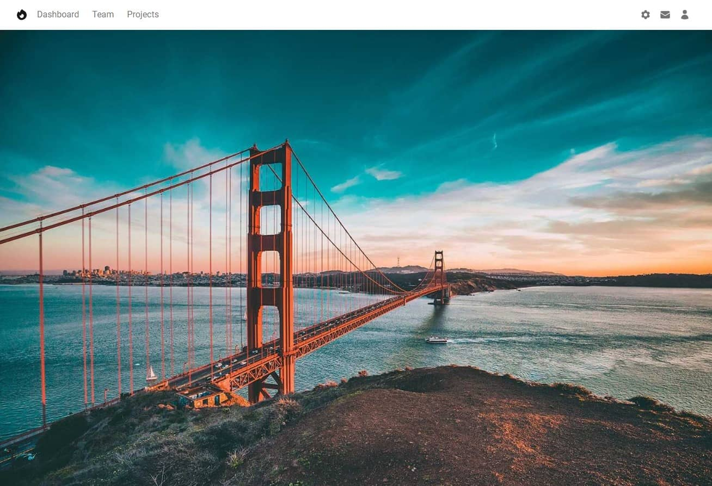
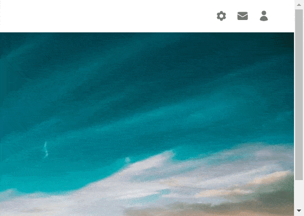

You probably know websites with an impressive background photo that cover the entire screen. These intro sections, also called Hero Section or Hero Image, have gained well-deserved recognition.
They are beautiful, it's true. However, they can cause a lot of frustration, because adapting them to look good on both large screens and mobile devices is a bit of a challenge.
But don't worry about it. Today is your lucky day because you'll learn how to create full-page Hero Sections that not only look stunning, but also work perfectly on screens of all sizes.
Let's jump right into the code!
First, we need an image that is high enough resolution to cover even large screens and still look good.
However, be careful not to overdo it. 4k graphics, additionally unoptimized, can slow down your website so much that the user will leave it angry before he has a chance to admire your Hero Image.
What's important, we need to add this image not as an
<img> element but as a
background-image of a regular <div>.
Additionally, we will add this as inline CSS.
Add the following code to index.html file below the navbar
component and above the closing </header> tag.
Note: If you want, you can replace the photo with another one. Just make sure you provide the correct link.
Remember that we are adding this image directly to the element as inline CSS.
After saving the file and refreshing your browser, you will notice that... nothing has changed! But take it easy cowboy, we're just getting started.
Since we added this image not as an <img> element, but as
a background-image of a normal </div>, we
need to define the height of this div. By
default, it has a height of 0, so our image has nowhere to
render.
All right, so let's set the height of our div to, say,
500px.
After saving the file, you'll see that you can finally see the picture! But something is wrong. Some weird stuff is happening on the right side and it seems that the picture ends and starts again.
And the result is hardly satisfactory at all. We only see the tip of the famous Golden Gate Bridge, and the graphics were supposed to cover the entire screen, not just 500px.
I think it's time to call upon the magic of Tailwind CSS.
Let's add the .bg-no-repeat class to our image:
After saving the file, you will see that the part of the image that was this strange repetition is gone on the right.

Use .bg-no-repeat when you don't want to repeat the
background image.
Now let's make the image stretch to its full width, and I'll cover that empty space to the right.
Add .bg-cover class to the image:
After saving the file, the image should stretch to its full available width.
Use bg-cover to scale the background image until it fills the
background layer.
Now let's scale the image so that it takes up the entire screen area instead of 500px.
Let's remove the hardcoded height of 500px, and add a
.h-screen class instead.
After saving the file and refreshing the browser, you will see that the image now covers the entire screen.

Use .h-screen to make an element span the entire height of
the viewport.
However, we have a problem. We wanted our image to cover exactly 100% of the available height, and for some reason a scroll bar appeared in the browser window. This means that our picture goes a little further than we wanted.

If you look closely, you'll see that the image extends off the screen by
exactly the height of our navbar - which is
56px .
This is because to the 100% of the viewport height, set by the
h-screen class, the Navbar added its height. So we have to take
it into account and subtract it.
To the image div let's add margin-top: -56px; .
Thanks to this, the graphics will "slide" under the navbar exactly by its
height and will be perfectly matched to the size of the screen.
After saving the file you will see the scroll is gone and now our hero image fills the screen perfectly.
...almost perfectly 😕 there is a small bug on mobile screens, which we will take care of in the next lesson, and by the way we will learn another important aspect of Tailwind, called arbitrary values.